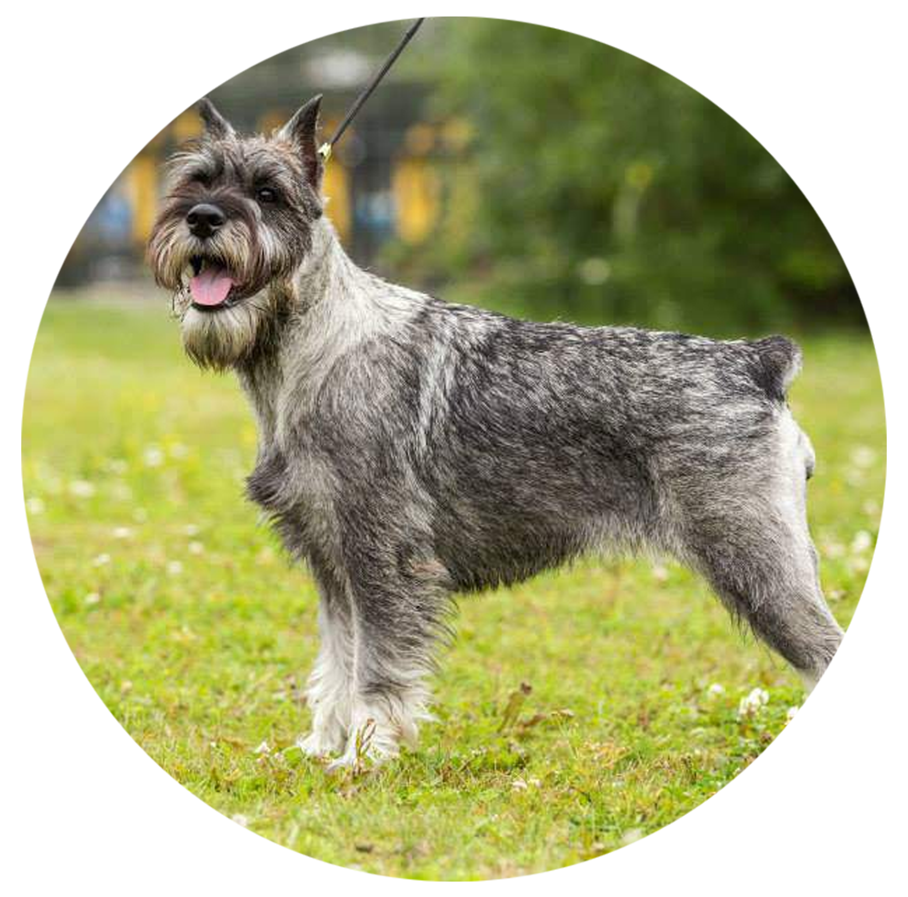

Миттельшнауцер
МИТТЕЛЬШНАУЦЕР (нем. Mittelschnauzer), порода служебных собак. Другое название - стандартный, или средний шнауцер. Предками миттельшнауцеров считаются небольшие, невзрачные собаки с жесткой шерстью, напоминавшие пинчеров. Родиной породы, известной со средних веков, является Германия, о чем свидетельствуют многочисленные изображения этих собак на картинах и полотнах, датируемых 15 веком. В те времена шнауцеры были простыми деревенскими собаками: охраняли конюшни, пасли и стерегли гурты скота, сопровождали дилижансы и купеческие повозки. Дома охотились на мышей и крыс, а в лесу на хорьков и ласок. В становлении породы участвовали черные немецкие пудели, серые вольфшпицы и пинчеры с грубой шерстью.
Миттельшнауцер - коренастая собака квадратного формата. Высота в холке 46-50,5 см, вес 15 кг. Голова прямоугольная, удлиненной формы. Нависающие кустистые брови и щетинистые усы придают собаке сердитый вид. Лапы короткие, круглые, пальцы собраны в комок. Хвост высоко посажен, купируют, оставляя 3 позвонка. Шерсть жесткая. Окрас: перец с солью или черный. Миттельшнауцер - энергичная, живая собака, бдительный и осторожный сторож. Недоверчиво относится к посторонним, всегда начеку. Умен, но упрям и шумлив, требует строгого воспитания. Подходит для содержания в городской квартире, не требуются чрезмерные физические нагрузки.
Характер
Энергичный характер породы собаки миттельшнауцер делает их отличными компаньонами для активных людей. В зависимости от ситуации, собаки этой породы бывают как милыми и приветливыми, так и исключительно серьезными.
Обучение этих собак, как правило, не вызывает проблем. Благодаря высокому интеллекту, они очень быстро усваивают команды и стремятся во всем угодить хозяину, но иногда могут быть достаточно упрямыми. В этом случае пригодится опыт содержания собак, если же миттельшнауцер – ваш первый питомец, вам может быть тяжело с ним справиться.
Миттельшнауцеры от природы стремятся к доминированию, и лучше всего будет с детства проводить для них тренировки на послушание. Если этого не делать, со временем собака может стать совершенно неуправляемой. В то же время жесткие методы тренировки для них не подойдут, они могут лишь усугубить ситуацию и сделать собаку еще более независимой.
Характер породы собак миттельшнауцер в целом добрый, собака отлично ладит с детьми, особенно уже подросшими. Малыши могут испугаться собаки из-за ее склонности к доминированию.
Чтобы исправить врожденную подозрительность собаки к неизвестным людям и выраженную агрессивность к другим собакам, миттельшнауцера необходимо с детства обучать и социализировать.
Вес и рост взрослых
Высота в холке 46-50,5 см,
Вес около 15 кг.
Здоровье и возможные проблемы со здоровьем
У этой породы здоровье в основном хорошее. Но все же от предков остались такие болезни, как дисплазия тазобедренного сустава, вследствие чего начинается хромота, а также эпилепсия, которая выявляется после 2-летнего возраста. Нередко владельцы миттельшнауцера обращаются за помощью к ветеринару из-за инфекционного воспаления мочевого пузыря своего питомца, катаракты или гипотиреоза – нарушенной работы щитовидной железы.
Условия содержания
Теоретически миттельшнауцера можно содержать и в квартире, но сама собака любит открытые пространства и свободу.
Тренировки
Следует заметить, что частые физические нагрузки для этой собаки просто необходимы. Миттельшнауцер сам знает, сколько ему надо двигаться, вам не придется силой тащить его на улицу, как некоторых других больших собак.
Продолжительность жизни
13-15 лет.
Уход за шерстью
Его длинная и грубая шерсть требует регулярного расчесывания специальной металлической расческой по направлению роста. Делать это нужно минимум три-четыре раза в неделю, тогда шерсть питомца будет в отличном состоянии, радовать и вас, и ваших гостей, и саму собаку. Не меньшее внимание нужно при этом уделять подшерстку – он часто путается и там быстро образуются колтуны.
Для упрощения ухода за шерстью можно стричь собаку несколько раз в год, чтобы шерсть не успевала отрастать. И действительно, эта нехитрая процедура может значительно облегчить регулярный уход.
Ножницами с тупыми концами нужно обрабатывать шерсть вокруг рта и около глаз, не давая ей отрасти слишком сильно. Бороду стричь не нужно – лучше мыть или протирать влажной тряпкой исключительно в гигиенических и эстетических целях